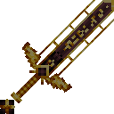

Image from Namuwiki:main door
Infernal Forge
Better Minecraft adds a ton of new armour and weapons to the game some that are stronger than Netherite. We'll cover the Weapons. First we have the basics like wooden, stone, diamonds, and Netherite but there are a lot more like Warden tools, and Tools you can get from bosses like The Incinerator or the Infernal Forge.
The Incinerator
Image from MC
Image from Namuwiki:main door
Infernal Forge
There are some armour that is very overpowered in this mod we'll cover some. There are basic armours like leather, chainmail, iron, gold, diamond, and Netherite(Netherite being the strongest in vanilla Minecraft). But there are things that you can use to upgrade your Netherite like Ignitium, Tungsten, and others.

Image from MC
Ignitium Armour
The best armour in the game is Ignitium armour which you have to fight Ignis to get the Ignitium Ingot which is needed to upgrade your armour. You also need the Ignitium upgrade template which is like the Netherite Template put you need Soul soil, blaze powder, and an actual upgrade template. You can also craft other things, like the Bulwark of Flame which is a better sheild and a sword that we'll talk about in the tools section.
You can craft many other things from other dimensions as well including some amrour in the Everbright, Everdawn, Aether, and the Deeper and Darker. You can also craft a full set of Warden armour which is just upgraded Netherite. Plus you have to kill a lot of Warden's but it's worth the upgrade because it makes you really overpowered and gives you a speed boost.